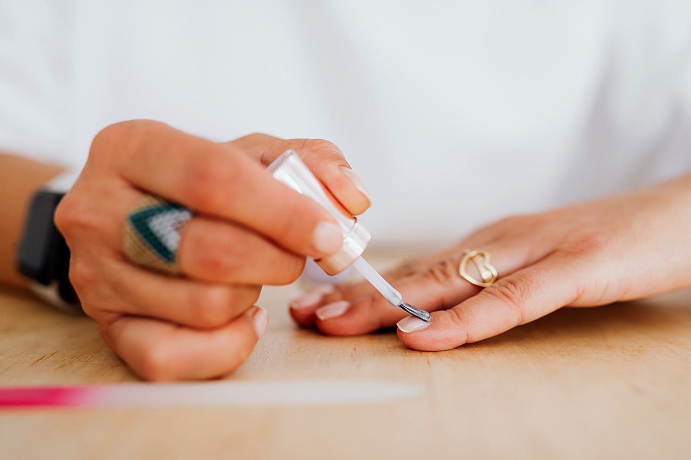
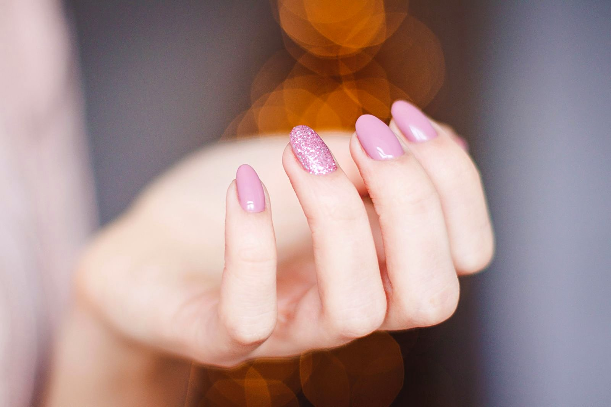
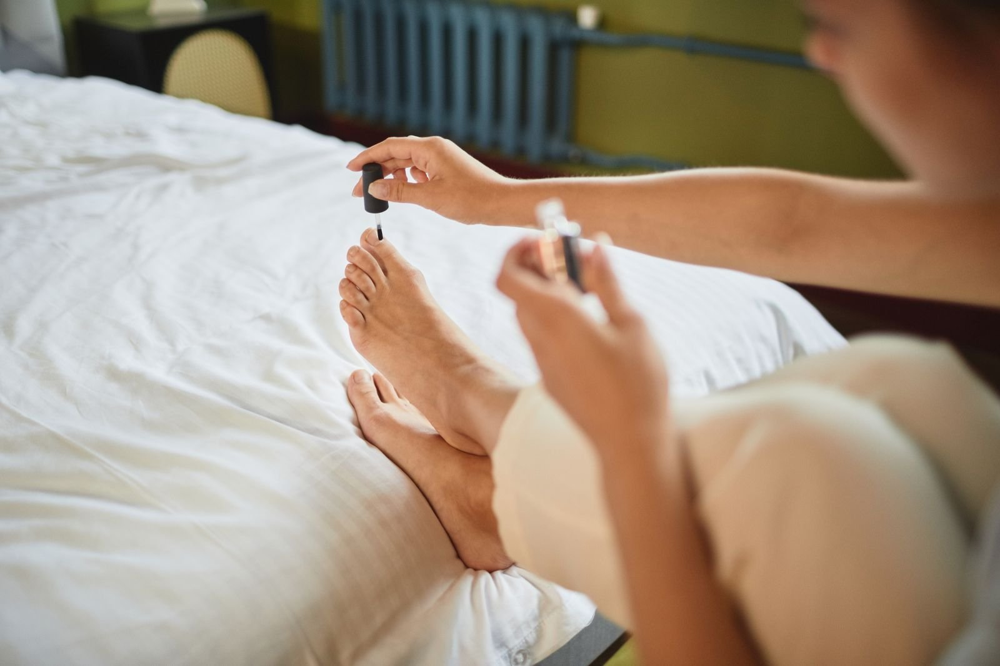
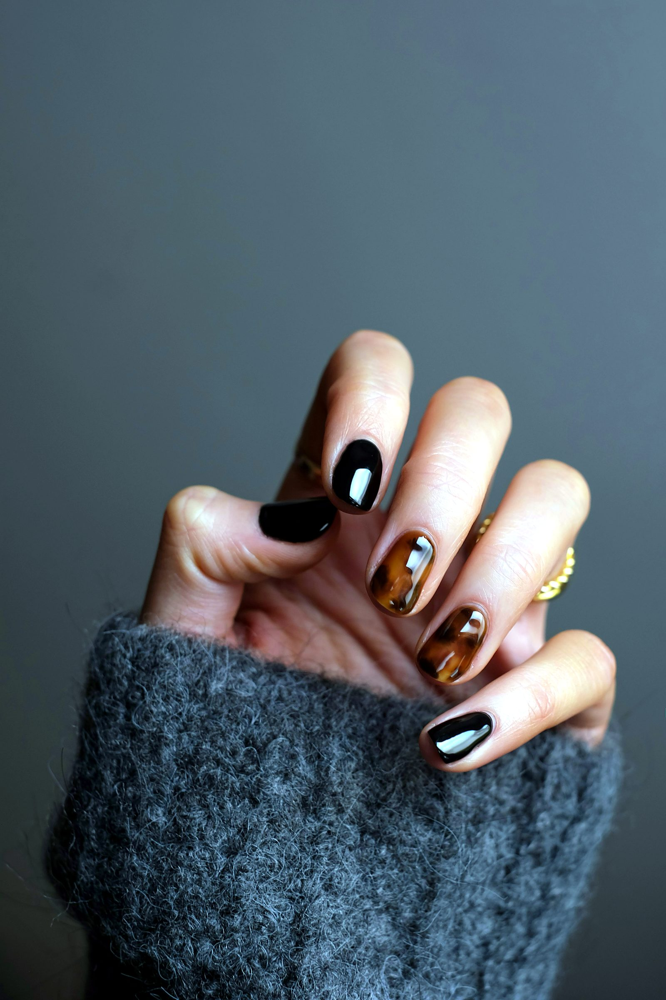
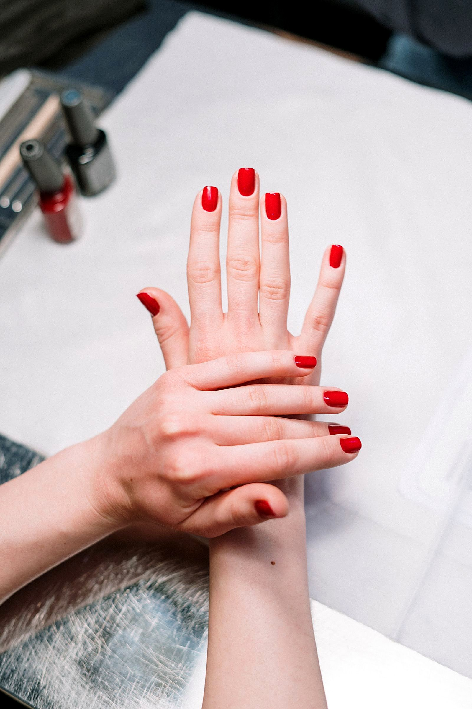
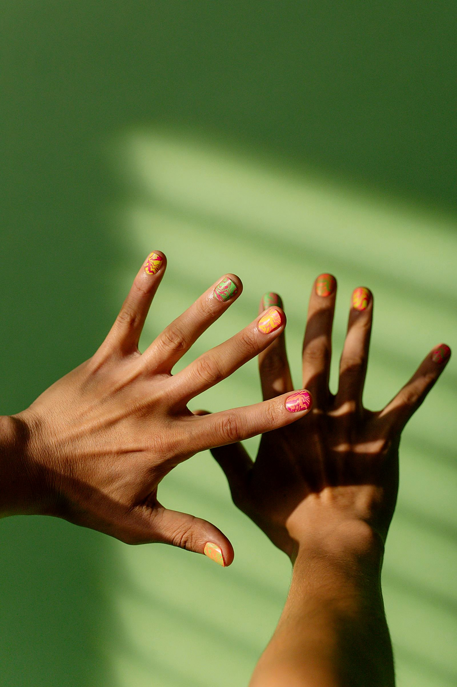
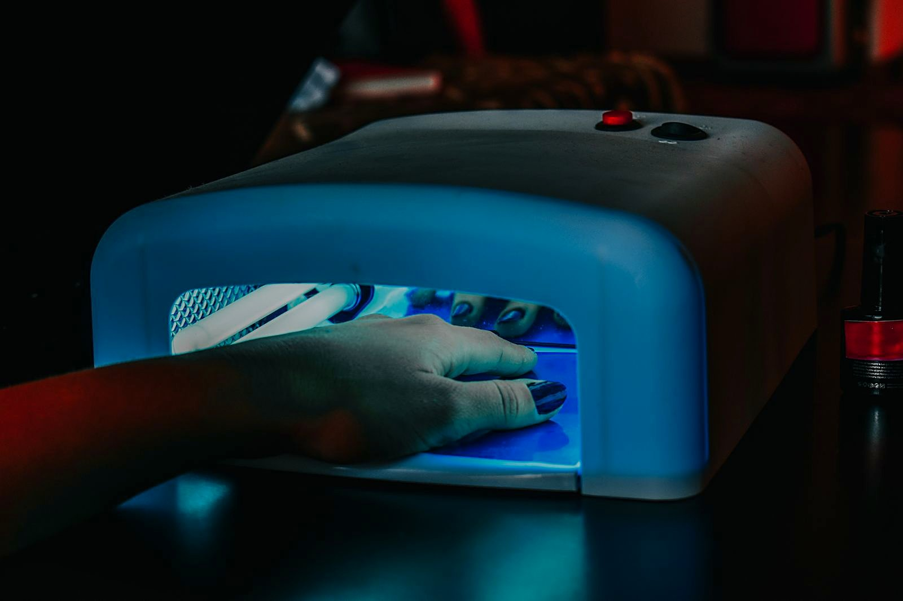

Nails, at the station.
Manicures, pedicures and nail art at a KuuStore nail station, shaping, cuticle care, polish and finished sets, in the shop. Fungal toenail care has its own page; this is the full nail menu around it.
Want to spread it out? On services of $35 or more, you can split your payment at checkout with Klarna or Affirm — pay over time instead of all at once, right on the payment page.
Book nails
Manicures
Nail shaping, cuticle care and polish, finished at the station. Choose a clean natural finish or colour, the set is built around your hands and your style.
| Service | What you get | Price |
|---|---|---|
| Classic manicure | Shaping, cuticle care and regular polish | $20 |
| Gel manicure | Shaping, cuticle care and gel polish, cured under the lamp | $40 |
Flat prices, set at the middle of the South Florida market, no surprises at the station.




Pedicures
Foot soak, nail shaping, cuticle and heel care, and polish. For cosmetic care of nails affected by fungus, see fungal toenail care, that service is separate and described on its own page.
And if you’ve had a toenail cared for and want to walk out looking finished, just ask: we can place a cover nail over the treated nail, a fake nail glued over the top, so the bad shape stays hidden underneath while your real nail grows out. The cover nail is a $10 add-on per nail.
| Service | What you get | Price |
|---|---|---|
| Pedicure | Soak, shaping, cuticle and heel care, regular polish | $35 |
| Gel pedicure | The full pedicure, finished with gel polish | $45 |
| Cover nail add-on | A fake nail fitted and glued over a treated nail, finished with polish | $10 per nail |
Flat prices, set at the middle of the South Florida market.




Nail art & finished sets
Colour work and nail art, from a single accent to a full designed set. Recent styles from the station:
| Service | What you get | Price |
|---|---|---|
| Acrylic full set | A full set built, shaped and polished at the station | from $70 |
Full sets start at $70, the middle of the South Florida market. Longer lengths and detailed art are priced before we begin.










Photography: stock imagery of nail services, shown for illustration. Client photos appear only with written consent, per photo.